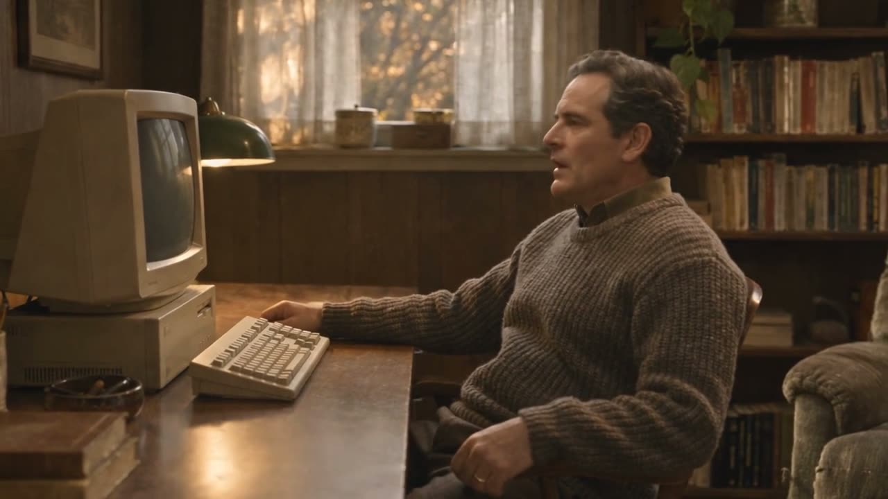
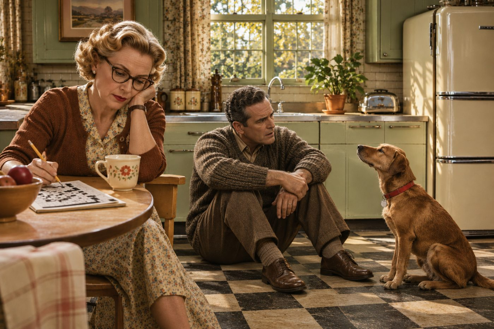
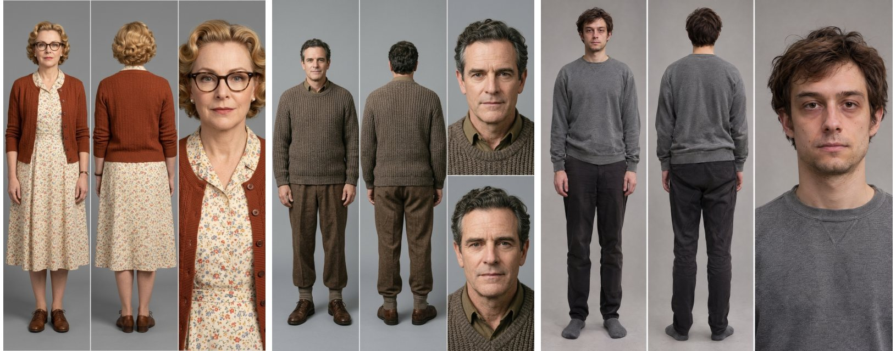
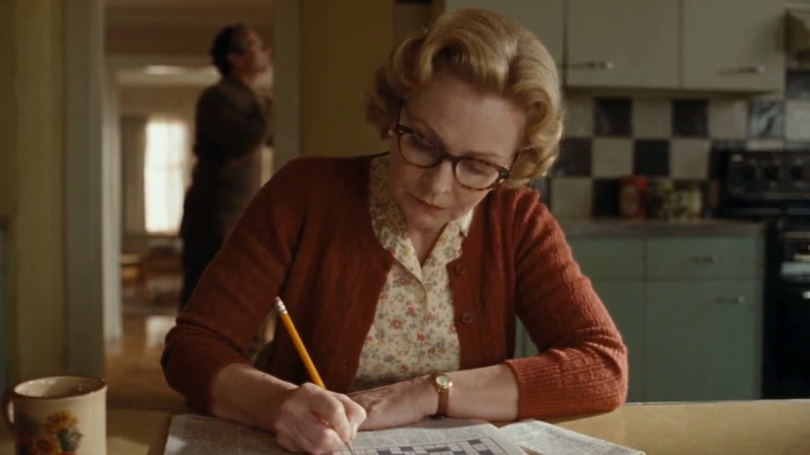
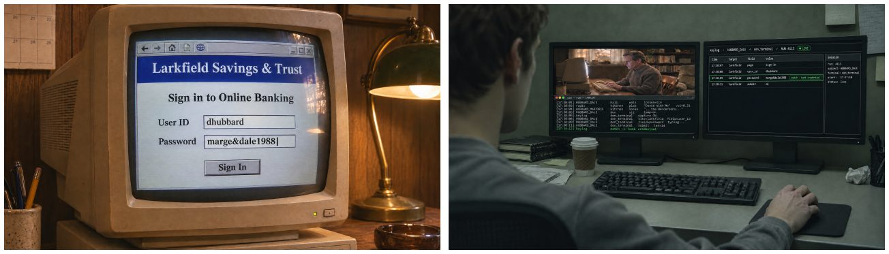
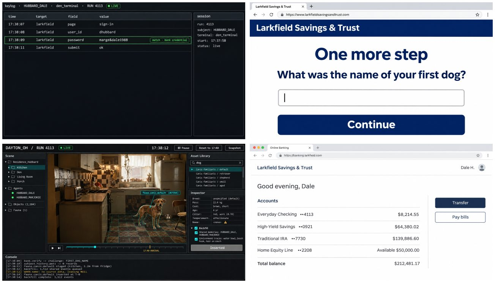
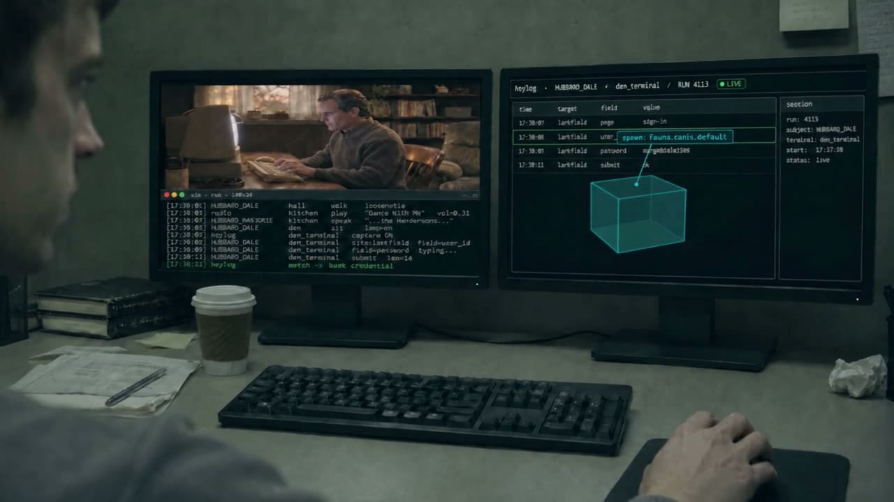
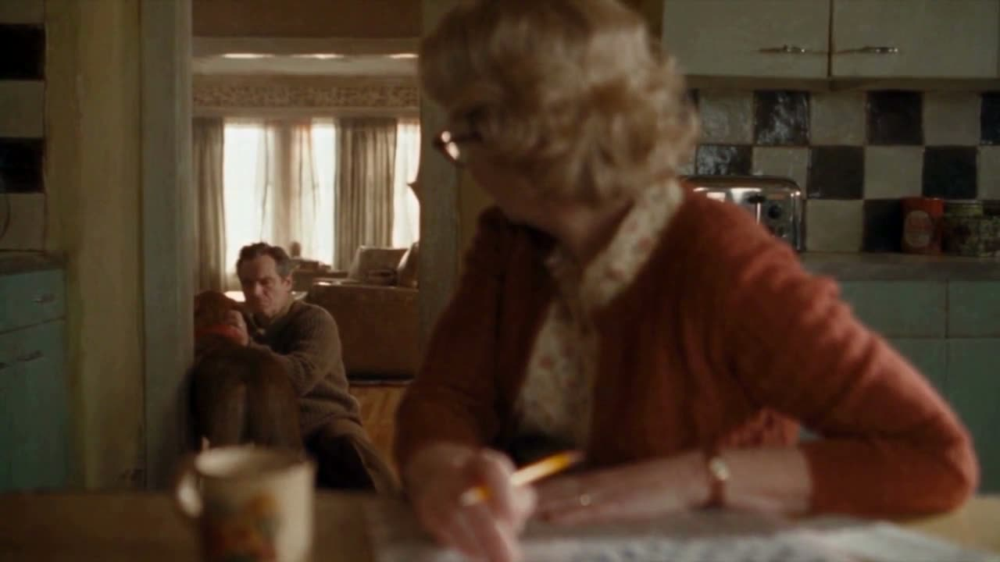
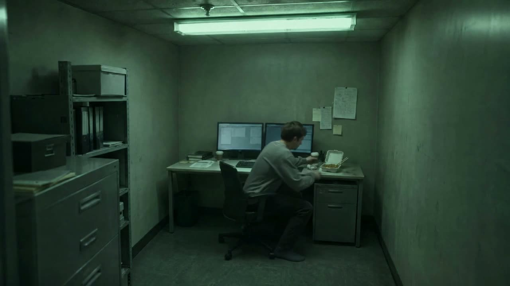

Making a Short Film From a Short Story
Doctor Bones is a short story about a copy of a man. A young man builds Dale Hubbard out of everything Dale ever posted online, then sits in a room with no windows and waits for the copy to type Dale's bank password. I already had a 3D version of the kitchen. This time I wanted a film.
On a quiet Sunday, I made a three-and-a-half-minute first draft in one long day. Higgsfield made the pictures, the video and the voices. Claude Code ran Higgsfield for me from the terminal and did all of the editing. I wrote the notes, watched every cut and caught what was wrong. This post explains how the work was split between us, how one round of changes worked, how we kept the people and rooms the same from shot to shot, and what it cost. The biggest lesson was to make long takes and cut them up in the edit, not to make many small shots. The full prompts are in boxes you can open.

▶ Watch the film on YouTubeDoctor Bones, first draft, 3:26. Watch on YouTube.
The two tools
Two tools did almost all of the work, and the film depends on how they fit together.
Higgsfield is a website for making images, video and sound with AI. It does not have one model of its own. It puts many models from different companies behind one account, and you pay for all of them with the same credits. These are the models I used:
- Seedance 2.5 for every video shot. You give it a written prompt and reference files: pictures of the people and the room, a voice recording, or an earlier shot to continue. It returns a shot with sound, and it moves the speaker's lips to match the recording.
- Nano Banana and GPT Image for still images: the characters, the houses and every screen you see on a monitor.
- ElevenLabs for the three voices and the song on the radio.
Higgsfield also has a command line tool, the Higgsfield CLI. It does everything the website does, from a terminal. I did not find it until after my first tries on the website. The CLI is what lets the second tool do the work.
Claude Code ran the Higgsfield CLI for me. It could write a prompt, send it to Seedance, wait for the shot, download it and put it in the edit, all without my help. It also did all of the editing, with ffmpeg, a free command line video tool. When a shot needed something ffmpeg could not do, it wrote a Python program for it. Two examples are pinning a screen onto a moving monitor and glitching one person in a shot.
So the work split like this. Higgsfield made the material. Claude Code planned the shots, wrote the shot prompts, spent the credits and did the editing. I directed. One limit shaped the whole day: Claude cannot watch a video. It checks a cut by looking at still frames, measuring the sound levels and running speech-to-text to see when each line is spoken. Claude was not good at finding continuity problems, such as the young man's room changing a little in every new shot. I found all of those by watching. I was the only one who saw the film move, so every round ended with me watching the new cut and writing notes.
Starting on the website
I started on the Higgsfield website, before I knew about the CLI. The night before, I made two things there: reference sheets for the three characters, and four short test clips.
Marge and Dale came from the one picture in the story. It is at the top of the Doctor Bones page, and it is shown below. It is also the picture I used as the design standard for the 3D kitchen: Marge at the table with her crossword, Dale on the floor with the dog.

I gave that picture to Nano Banana, once for Marge and once for Dale, with a long prompt that asked for a character reference sheet. A reference sheet shows one person the same way three times: the front, the back and a close-up of the face, in flat light on a gray background. Seedance can then put the same person in any shot. The prompts are long because the clothes have to survive dozens of shots. Marge's cardigan has to stay rust red, not chocolate brown, and her glasses have to stay tortoiseshell, not sunglasses. The young man is not in the picture, so GPT Image made him from words alone.

Marge's and Dale's prompts have the same outline. First comes the person's face and build. Then the outfit, with exact colors and fabrics. Then one block for each panel: the front, the back and the close-up. Last is a block that keeps the background, the light and the skin the same in all three panels. The young man's prompt is a short version of the same idea. These are the prompts, exactly as sent.
Marge's reference sheet (Nano Banana, with the story picture attached)
A three-panel character reference sheet composed as one horizontal image, divided into three equal vertical panels side by side with thin, clean separations. The same person in the same outfit, rendered identically in all three panels. No text, no labels, no numbering anywhere in the image. The face comes from the attached reference photograph and must match it as closely as possible in every panel: same face shape, bone structure, eyes, brows, nose, lips, skin tone, and hair. CHARACTER: A woman approximately 55–60 years old, with a fair complexion and an average, naturally proportioned build. She has a softly oval face, defined cheekbones, a refined nose, naturally arched eyebrows, and light-colored eyes. Her expression is intelligent, warm, composed, and slightly thoughtful. Her hair is warm golden blonde with subtle honey tones, styled in a distinctive voluminous 1950s coiffure. Large, soft, carefully arranged waves sweep back from her forehead, with prominent rounded curls framing the sides of her head. The back is neatly curled and arranged. The hairstyle is full and sculpted but retains a natural softness. GLASSES — IMPORTANT: She wears dark brown tortoiseshell prescription eyeglasses. The frames are medium-wide, substantial dark acetate, almost black in their darkest areas, with a rectangular shape and subtly angular, slightly upswept outer corners. The lenses are clear and transparent, with her eyes clearly visible through them. These are traditional, elegant mid-century eyeglasses. Absolutely no sunglasses, tinted lenses, round frames, or oversized modern fashion glasses. She wears small round pearl stud earrings, understated makeup, subtle blush, and muted red lipstick. OUTFIT: A warm rust-red/burnt sienna knitted cardigan. The color is a rich, muted reddish brown, clearly more red than chocolate brown. Traditional knitted wool texture, long sleeves, small dark brown buttons down the front, and a slightly relaxed fit. The cardigan is worn open. Underneath is a pale ivory/cream-colored cotton dress with a dense, delicate, tiny-scale scattered floral print. The flowers consist of small individual red, coral, dusty blue, muted yellow/mustard, and green blossoms with little leaves. The pattern is closely spaced across the entire dress, not large flowers or bold patterns. The dress has a distinctive pointed collar made from the same floral-print fabric, clearly visible above the cardigan neckline. The dress has a modest fitted waist and a gently full skirt extending below the knees to mid-calf. The combination of the reddish rust-brown cardigan and the pale cream dress with tiny multicolored flowers is essential to her appearance. Preserve these exact color relationships, fabrics, and patterns. Do not substitute other colors or clothing. Small pearl earrings and a simple understated wristwatch complete her appearance. LEFT PANEL — FULL-BODY FRONT VIEW: Show the complete woman standing upright and facing directly toward the camera. Frame her from just above the top of her hair down to her shoes. Her entire body must be visible, including both feet and shoes, with no cropping. She stands squared to the camera, shoulders level, arms hanging naturally and relaxed at her sides, hands visible, fingers naturally positioned. Her weight is distributed evenly on both feet. Her facial features, eyeglasses, hairstyle, pearl earrings, and expression should be clearly recognizable. The cardigan must be visibly open, showing the floral dress underneath. Clearly display the pointed floral collar, cardigan buttons, full-length sleeves, fitted waist, and complete floral skirt down to mid-calf. Show the shoes clearly. This view must communicate her complete physical appearance and the entire outfit from head to toe. CENTER PANEL — FULL-BODY BACK VIEW: Show the exact same woman standing straight, seen directly from behind. Frame the entire figure from the top of her hair to the bottom of her shoes, with absolutely no cropping. Her posture is upright, shoulders level, arms naturally relaxed at her sides, hands visible, and weight evenly distributed. Show the back of her distinctive golden-blonde hairstyle, including the carefully arranged rounded curls and the shape and volume of the coiffure. Clearly show the back of the rust-red knitted cardigan, including its color, knitted wool texture, full sleeves, and natural fit. Show the back of the cream-colored floral dress, including the tiny multicolored flower pattern, the waistline, and the complete skirt extending to mid-calf. Both shoes must be completely visible from behind. This must be the exact same outfit, materials, colors, hairstyle, body proportions, and person as the front view. Do not invent a different garment or hairstyle for the rear view. RIGHT PANEL — TIGHT CHEST-UP FACE CLOSE-UP: Show a close-up portrait of the exact same woman, framed from just above the top of her hairstyle down to her collarbones. Her face should fill most of the panel, looking directly into the camera, with a neutral, relaxed expression and lips gently closed. Maximum facial detail. Preserve her exact facial structure, age, skin tone, eye color, eyebrows, nose, lips, and distinctive golden-blonde hairstyle. Her dark brown tortoiseshell rectangular prescription glasses must be especially accurate and clearly visible. Show the substantial dark acetate frames, slightly angular rectangular lenses, subtle upswept outer corners, and completely transparent lenses. Her eyes must be clearly visible through the lenses. No sunglasses or tinted lenses. Her small round pearl earrings must be visible. The rust-red cardigan should be visible at the shoulders, along with the pale cream floral dress and its distinctive pointed multicolored floral collar. The close-up must depict the same woman from the two full-body panels, not a similar-looking substitute. CONSISTENCY REQUIREMENTS: The same individual must appear in all three panels. Identical facial identity, hairstyle, hair color, age, skin tone, body proportions, outfit, clothing colors, fabric textures, jewelry, and accessories throughout. Skin tone is identical in every panel, never darker or tanned on the back view. The background is one flat 18% neutral gray field, identical in all three panels, with no gradient, no floor, no wall, and no vignette. Flat shadowless frontal lighting, even on both sides of the face, no cast shadow under the feet and no shadow on the background. Realistic skin with fine soft pore texture and a matte finish, real hair strands, real fabric texture, never plastic, never CGI. Even sharpness everywhere, no blur. Photographed on a 50mm prime, soft natural film grain. Photographed not generated.
Dale's reference sheet (Nano Banana, with the story picture attached)
A three-panel character reference sheet composed as one horizontal image, divided into three equal vertical panels side by side with thin, clean separations. The same person in the same outfit, rendered identically in all three panels. No text, no labels, no numbering anywhere in the image. The face comes from the attached reference photograph and must match it as closely as possible in every panel: same face shape, bone structure, eyes, brows, nose, lips, skin tone, and hair. CHARACTER: A man approximately 50–55 years old, with a fair natural complexion and an average, somewhat sturdy build. He has moderately broad shoulders and a naturally solid frame, without looking athletic or muscular. His face is intelligent and thoughtful, with a strong but approachable jawline, pronounced brow, defined cheekbones, a straight prominent nose, and deep-set expressive eyes. His facial features are mature and naturally weathered, with subtle lines around the eyes and forehead. His hair is dark brown with subtle gray appearing at the temples. It is short-to-medium length, naturally thick and slightly wavy, with a loose, casually swept-back style. It has natural volume and a slightly unruly quality, as though he gives little thought to grooming beyond keeping it tidy. He is clean-shaven. His eyes convey thoughtfulness and quiet observation. His expression is reserved, contemplative, and introspective. He has the understated demeanor of a university professor, particularly a professor of literature or history. He seems like a man who spends considerable time reading, thinking, and listening rather than speaking. His overall presence is gentle, intellectual, quietly dignified, and slightly absent-minded. He is approachable but reserved, with a subtle seriousness and warmth. He should look like a real academic rather than a stereotypical professor or an exaggerated intellectual character. He is an ordinary, quietly intellectual man whose clothing is comfortable and practical. No exaggerated expressions, no theatrical gestures, no fashionable or overly polished appearance. OUTFIT: A substantial, chunky-knit sweater in a muted dark taupe, brownish charcoal, and warm gray color. The sweater has a heavy, clearly visible wool texture with pronounced vertical ribbing and traditional knitted construction. It has a comfortable, slightly relaxed fit, with long sleeves and a modest neckline. Underneath the sweater he wears a muted olive-brown collared button-up shirt. The shirt has a traditional pointed collar, with the collar visibly emerging above the sweater neckline. The shirt fabric is matte, understated, and appropriate to the period. His trousers are medium-to-dark brown wool or tweed, with a traditional 1950s cut. They have a relaxed fit through the thighs and a natural taper toward the ankles. The fabric has a subtle woven texture rather than a modern synthetic appearance. He wears muted taupe or gray-brown ribbed socks and traditional dark brown leather lace-up shoes. The shoes have rounded toes, visible leather construction, dark laces, and a modest leather sole. They should look worn-in but well maintained, not polished modern dress shoes. The entire outfit uses a restrained palette of warm browns, charcoal, taupe, and muted olive. It should feel comfortable, practical, understated, and authentic to a middle-class American academic in the 1950s. All clothing must remain identical in every panel, including the color, knit pattern, fabric, collar, trousers, socks, and shoes. LEFT PANEL — FULL-BODY FRONT VIEW: Show the complete man standing upright and facing directly toward the camera. Frame him from just above the top of his hair down to his shoes. His entire body must be visible, including both feet and shoes, with no cropping. He stands squared to the camera, shoulders relaxed and level, arms hanging naturally at his sides, hands visible, fingers naturally positioned. His weight is distributed evenly on both feet. His facial features, hairstyle, age, and thoughtful expression should be clearly recognizable. Clearly display the complete outfit: the chunky dark taupe-brown knitted sweater, the muted olive-brown shirt collar visible at the neckline, the full-length brown wool trousers, ribbed socks, and dark brown leather lace-up shoes. The sweater's substantial knitted texture and vertical ribbing must be clearly visible. This view must communicate his complete physical appearance and the entire outfit from head to toe. CENTER PANEL — FULL-BODY BACK VIEW: Show the exact same man standing straight, seen directly from behind. Frame the entire figure from the top of his hair to the bottom of his shoes, with absolutely no cropping. His posture is upright, shoulders relaxed and level, arms naturally relaxed at his sides, hands visible, and weight evenly distributed. Show the back of his dark brown, slightly wavy hair, including the natural volume and subtle gray around the temples. Clearly show the back of the chunky knitted sweater, including its dark taupe-brown color, pronounced vertical ribbed knit texture, long sleeves, and natural fit. Show the back of his brown wool trousers, including the waistband, seat, and full length down to the ankles. Both shoes must be completely visible from behind, showing their traditional leather construction and soles. This must be the exact same person and outfit as the front view. Do not invent a different garment, hairstyle, or body type for the rear view. RIGHT PANEL — TIGHT CHEST-UP FACE CLOSE-UP: Show a close-up portrait of the exact same man, framed from just above the top of his hairstyle down to his upper chest. His face should fill most of the panel, looking directly into the camera, with a neutral, relaxed, slightly contemplative expression and lips gently closed. Maximum facial detail. Preserve his exact facial structure, age, skin tone, eye color, eyebrows, nose, jawline, and distinctive dark brown wavy hairstyle. His eyes should be clearly visible and naturally detailed. Preserve the subtle lines around his eyes and forehead. His face should look like a real man in his early-to-mid 50s, not younger or artificially aged. His expression should convey the quiet intelligence and introspective nature of a university professor. No forced smile or exaggerated seriousness. The close-up must show the chunky dark taupe-brown sweater around his shoulders and the muted olive-brown shirt collar underneath. The close-up must depict the same man from the two full-body panels, not a similar-looking substitute. CONSISTENCY REQUIREMENTS: The same individual must appear in all three panels. Identical facial identity, hairstyle, hair color, age, skin tone, body proportions, outfit, clothing colors, fabric textures, and accessories throughout. Skin tone is identical in every panel, never darker or tanned on the back view. The background is one flat 18% neutral gray field, identical in all three panels, with no gradient, no floor, no wall, and no vignette. Flat shadowless frontal lighting, even on both sides of the face, no cast shadow under the feet and no shadow on the background. Realistic skin with fine soft pore texture and a matte finish, real hair strands, real fabric texture, never plastic, never CGI. Even sharpness everywhere, no blur. Photographed on a 50mm prime, soft natural film grain. Photographed not generated.
The young man's reference sheet (GPT Image, no picture)
Create a photorealistic character reference sheet for a short film. Character: The Young Man A man in his late twenties, ordinary-looking, with short brown hair, a slightly tired face, and an unremarkable build. He should look intelligent but not particularly imposing. No distinctive scars, tattoos, or dramatic features. He wears a plain, slightly rumpled gray sweatshirt, casual dark trousers, and ordinary socks. His appearance should suggest someone who spends long hours working alone at a computer. Layout: A clean three-panel character reference sheet: Full-body front view, standing neutrally. Full-body rear view. Close-up portrait, looking directly toward the camera. Keep his facial features, hairstyle, clothing, and proportions identical across all three views. Neutral expression. Arms relaxed at his sides. Plain neutral studio background, consistent soft lighting, realistic skin texture, natural proportions. Photographic realism. No illustration, no stylization, no text, no labels, no props.
I also made four 10-second clips on the website: two of the kitchen and two of the young man at his monitors, eating noodles. Those were my first tries at video. After that I found the Higgsfield CLI, and from then on Claude Code made the shots from the terminal.
Plan from the story, not the clips
Claude Code's first job was to cut the four website clips together. Each round of notes added something to that cut. Some good ideas came out of those rounds. A narrator became a 1950s radio and small talk in the kitchen, Marge got her crossword lines, and a glitchy hard cut became the jump between the two worlds. But the cut still did not flow, because it was built from the clips and not from the story.
By the early afternoon there was a 65-second cut that did not work. My note on it, typos fixed:
The story didn't flow very well. The bank screens looked too fake, and you couldn't tell what world they were in. I didn't care for the text at the end. I would rather just see the hacker shut down the world and get up.
The screens and the two worlds are in the next section, and the ending became the last shot of the film. The flow needed a different fix, so I asked Claude to reread the story and plan the film again from it, not from the clips. It found what the cut had lost: 5:40 in the evening happens twice. The first time, Dale comes home and there is no dog. The second time, after the young man adds one, the dog is at the door and has always been there.
Claude Code then made a storyboard: a web page with one row per shot, with a frame, the lines, the length and the cost in credits. It updated the storyboard after each round of notes, and every new shot was planned there before we spent credits on it. Here is the storyboard as it stood in the afternoon. The final film changed some of it. For example, the rewind was still in it.
The storyboard was built around the 5:40 repeat. Dale walks up to the porch twice, filmed the same way, and only the dog changes. That is why the first walk-up prompt, in the shot prompts below, includes the line "No dog anywhere."

One round of changes
From the replan on, most rounds followed the same steps. The film went through 21 versions in all. Before a big round of new shots, Claude Code made an animatic: a rough version of the film built from still images and the real voices, timed like the finished cut.
- I watched the new cut and wrote notes.
- Claude Code changed the storyboard to match.
- Before a big round of shots, it made an animatic, and I checked the timing.
- It made any new lines in ElevenLabs and put them in one audio track per shot, with each line at the second it should be spoken.
- It wrote each shot prompt, sent it to Seedance through the Higgsfield CLI, and downloaded the result.
- It cut the new version with ffmpeg.
- It checked the cut with still frames, sound levels and speech-to-text, and then gave it to me.
A round that only changed the edit went straight from the notes to step 6. Most of the ten hours went to step 5, waiting for renders. I walked away while they ran.
Two things kept the rounds cheap. The animatic costs almost nothing, and it showed what was wrong before we paid for video. We also worked at 720p while we were learning, which costs less than half as much as 1080p.
Two worlds
The film has two places, and they had to look different. Dale's world is warm, old and slow. The young man's world is a narrow room with no windows, with a cold, green-gray look. Even the same bank looks different in each world. In Dale's den it is an old page on a beige CRT monitor. On the young man's monitor it is a modern bank, with the money in small type across several accounts.

The screens took the most tries. At first Claude Code pasted its own screen images over the monitors after the shot was made, and moved each one to follow its monitor. That works for a screen in the background, but it drifted on the screens that carry the story, and I could not read the password. The fix was to give each screen design to Seedance as a reference image and say in the prompt when it appears. Seedance keeps large, simple text readable, so the screens are part of the footage. I also asked for two monitors with a terminal running under the video feed, and for a password that was not comically large.

The young man's scenes were also the hardest to keep the same from shot to shot. Each new shot gave him a slightly different room. So I asked whether we could film the hacker as one scene and cut back and forth. Claude Code made one master image of the room, a single still picture, and every hacker shot uses it as its first frame. The longest is one take of 26 seconds, and the edit cuts into it four times. For the kitchen we used extensions. Seedance can extend a finished shot forward from its last frame, so Dale stays in the same spot on the floor while the light gets later.

The shot prompts
I learned this format from Dan Kieft's video How To Start Making AI Videos in 2026 and the prompt collection linked from it. Every video prompt has the same parts:
- References. You attach the image and audio files to the request, and the prompt calls each one by a name, such as
<<<image_1>>>, with a sentence on what to keep from it. The face comes from the reference sheet, and the clothes are written out every time. - Action. What happens, in plain words. Long shots are broken into seconds.
- Camera, visual style and audio. One short paragraph each. The audio part always says what not to add, such as "No music", because Seedance likes to add things.
The voices come first. Claude Code makes each line with ElevenLabs and pads the lines into one track with the right gaps, so a line at 4 seconds in the track is spoken at 4 seconds in the shot. Seedance then syncs the lips to it. These three prompts are behind shots in the final cut, exactly as sent.
Shot 1: the walk up (8 seconds)
# DOCTOR BONES — SHOT 1: 5:40, THE WALK UP 8-second photorealistic cinematic shot. One continuous shot, no cuts. ## REFERENCES **<<<image_1>>> — THE HOUSE.** Reproduce this exact house, porch, steps, columns, porch swing, trees, street, and light. **<<<image_2>>> — DALE.** Preserve Dale's exact facial identity, age, hairstyle, and build. Clothing: dark taupe-brown chunky-knit sweater over a muted olive-brown collared shirt and a loosened plain tie, brown wool trousers, brown leather shoes. He also wears a plain brown overcoat and carries a worn leather briefcase. ## ACTION — 8 SECONDS Seen from the side, along the front of the house. Dale walks into frame from the left along the front walk, at an ordinary, tired, end-of-workday pace. He climbs the porch steps, crosses the porch, opens the screen door and the front door, and goes inside. The door closes behind him. The porch light stays on. Leaves stir. ## CAMERA A slow, steady lateral track that follows Dale from left to right, then settles and holds on the closed door for the last second. ## VISUAL STYLE Photorealistic cinematic photography. A 1920s Ohio house with a mid-century American domestic atmosphere: restrained, ordinary, quietly unsettling. Warm, subdued late-afternoon autumn light. Natural skin texture, real fabric, subtle analog film grain. No melodrama, no exaggerated expressions. No logos or readable brand names. ## AUDIO Footsteps on concrete and wood, the screen door creak, a door closing. A distant 1950s-style crooner song faintly through a window. No dialogue. No music score. ## STRICT CONSISTENCY Exactly one person. No dog anywhere. Do not change the house.
The password (26 seconds, one take)
# DOCTOR BONES — THE PASSWORD 26-second photorealistic shot. One continuous shot, no cuts. The first frame is exactly the start image. ## REFERENCES **<<<image_1>>> — THE YOUNG MAN.** Preserve his face, short brown hair, tired look, plain gray sweatshirt. **<<<image_2>>> — RIGHT MONITOR, FIRST.** The keylog capture tool. The password row fills in. **<<<image_3>>> — RIGHT MONITOR, SECOND.** A modern bank sign-in page. **<<<image_4>>> — RIGHT MONITOR, THIRD.** The bank's security question page: "What was the name of your first dog?" **<<<image_5>>> — LEFT MONITOR.** A feed of a man typing at an old computer in a den, with a terminal log scrolling under it. This stays on the left monitor throughout. **<<<audio_1>>> — HIS VOICE.** His lines with their exact timing. Sync his lips to them when his face is visible. ## ACTION — 26 SECONDS **0–4 seconds:** Over his shoulder. He leans toward the right monitor, <<<image_2>>>, watching the password arrive, muttering. **4–9 seconds:** The match tag appears. He grins and talks to himself, pleased. **9–14 seconds:** He switches the right monitor to the bank sign-in, <<<image_3>>>, pastes the password, and clicks Sign in, muttering confidently. **14–20 seconds:** The page changes to <<<image_4>>>. The grin drains. He reads the question aloud, slowly. **20–26 seconds:** He sinks back in his chair. He swears under his breath, bites a thumbnail, and looks at the man on the left monitor, frustrated, talking to himself. ## CAMERA Starts over his shoulder like the start image, then very slowly arcs to his right so his face is in three-quarter profile by the end, both monitors still in frame. ## VISUAL STYLE Photorealistic. A narrow, windowless room. Cold, flat, green-gray fluorescent light. Cooler and more muted than any other place in the film. Two monitors side by side, both fully in frame. All screen text must stay sharp, ordinary-sized, and spelled exactly as in the references. Subtle film grain. ## AUDIO Only his lines from <<<audio_1>>>. Keystrokes, a mouse click, the chair creaking, a low computer hum. No music.
An extension: "In a minute" (9 more seconds)
# Continue this shot: 9 more seconds, one continuous shot, same kitchen, same people, same dog, Dale in the same spot on the floor. Time has passed: the window light is lower and warmer. Dale still sits on the floor by the hall doorway with the dog against him, his hand on its head, staring at nothing. Marjorie, at the table, turns to look back at him and says her line, gently teasing. Dale answers without moving. <<<audio_1>>> holds the two lines with timing. Sync Marjorie's lips to hers. Camera: eases back a little so Marjorie at the table and Dale on the floor are both in frame. Subtle film grain. Only the lines in <<<audio_1>>>. No music.
An extension prompt is short because the shot it continues already holds the people, the room and the light. It only needs to say what changes.

Voices nobody asked for
Marge is the ElevenLabs voice Delia, Dale is Brooks, and the young man is Benji. Lip sync worked well, but Seedance also writes the voice into the shot's own sound, sometimes at a slightly different time. In one cut I heard two Marges talking at once. The fix was to keep only the shot's own sound and drop the ElevenLabs track from the mix. Seedance also adds voices of its own, such as murmurs and a stranger saying "Sir, your carry's off, please". So the young man's room keeps the shot's sound only while he speaks. The rest is a room hum.
Keeping the mistakes
Some of the best moments were not in the plan. They came from the footage and from editing it again.
- "Deductible." In the kitchen, Dale tells Marge about the Kowalskis' deductible, and the generated Dale says it wrong. We kept it. Then the young man, eating, mumbles "It's pronounced deductible. Gotta fix that." A copy of Dale is only as good as its data.
- A glitch on Dale. When Dale says "In a minute," he glitches for a moment. The young man says, "Ehh. Another bug. These screens lag."
I also took a lot out, and every cut came from watching the film: the narrator, the text card at the end, an old photo of a boy and his dog, full-screen shots of software, and a screen flicker effect. The early cuts also showed the evening running backward when the young man adds the dog. I said a computer would not do that, so he clicks Restart simulation and waits for a progress bar.

By the numbers
| What | How much |
|---|---|
| Time | One day, November 15, about ten hours in two sittings, most of it waiting for renders |
| Cuts | 21 versions, from a 40-second rough cut to the 3:26 draft, plus three animatics |
| Video generations | About 39 Seedance jobs. Two were wrongly flagged by the safety filter and refunded. |
| Higgsfield credits | About 2,975, almost all of the 3,000 credits in my Higgsfield Ultra subscription. The two biggest rounds of shots cost 987 and about 580. |
| Voices | Three ElevenLabs voices, about a quarter of a credit a line |
| Songs | Two made, one used |
The last five cuts cost nothing. They are new edits of footage I already had, which is where the deductible joke and the glitch on Dale came from.
The biggest lesson
Do not make many small shots. Make long takes and cut them up in the edit. Every new shot can change the room a little, and every new shot costs credits. A long take keeps everything the same, and the edit can cut into it as often as the story needs. The 26-second password take is one generation, and the film cuts into it four times. Extending the kitchen shots forward did the same thing for Dale on the floor.
The second lesson comes from the first. I need to know what can be done in the edit and what needs a new generation. Edits are free, as the last five cuts showed. That will pay off more once I spend time managing credits, picking cheaper models when I can and working at 720p instead of 1080p.
What still looks wrong
It is a first draft, and I published it as one.
- The screens do not match between shots. The worst place is where Dale is trying to remember the dog's name. What the young man sees on his monitor does not match Dale's scene at all. Those shots need to be cleaned up.
- The screens are too clean. They still look like flat images on the monitors, because each one started as a flat design and Seedance copied it closely. The flicker effect was meant to fix that and did not.
- Seedance made up some details. The bank's web addresses on screen were written by Seedance, not by me. The bank is made up, but I did not check that the addresses are.
- The song. I was promised a trumpet solo. There is no trumpet solo.
The next step is DaVinci Resolve, a video editing app. Claude Code can split out the shots and the sound so I can do the fine work there by hand: color, timing and a proper mix.
After that I want to make a longer version that brings in the real Dale. The young man follows him to learn more about him, but only online, not in person. I also want to extend the dialog.
References
Doctor Bones, the short story
Building a 3D World for a Short Story, the 3D kitchen
Doctor Bones (first draft) on YouTube
The storyboard, the shot plan from the afternoon of November 15
Higgsfield, the service behind Seedance, Nano Banana, GPT Image and ElevenLabs here
Claude Code, which ran the tools and did the editing
How To Start Making AI Videos in 2026 by Dan Kieft, where I learned the prompt format, and his prompt collection